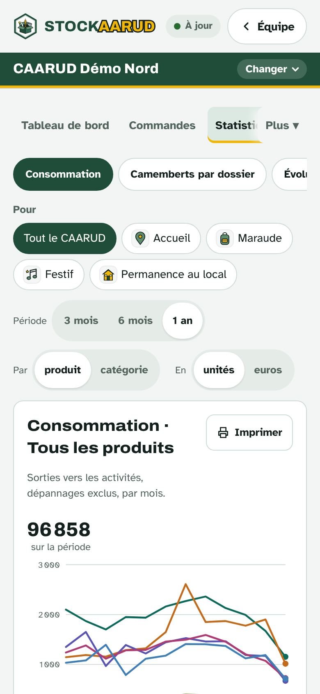

Le guide d’utilisation
Tout ce que fait Stockaarud, écran par écran : pour l’équipe qui note les sorties, pour le responsable stock qui commande et suit les chiffres.
Le PDF contient
- L’installation, pas à pas
- Ce guide d’utilisation
- Qui peut faire quoi
L’équipe
Ce que fait chaque personne qui distribue du matériel, depuis son téléphone.
-
Noter une sortie
Trois touches, debout au stock ou en maraude.
- Pour quoi ? L’activité : accueil, maraude, festif… Elle reste choisie toute la journée.
- Quel matos ? Le produit. Les plus utilisés pour cette activité sont en haut, et la recherche comprend « capotes » ou « paille ».
- Combien ? Tapez le nombre, ou touchez +5, +10, +20, +50 autant de fois qu’il faut. En unités, boîtes ou cartons : l’appli convertit. Puis Valider.
Une estimation honnête suffit : pas besoin de compter au carton près.

-
Changer d’activité
Les flèches, ou un glissement du doigt, passent d’une activité à l’autre. L’écran prend la couleur de l’activité : on voit d’un coup d’œil pour quoi on note.
Voir toutes les activités ouvre la liste complète, avec le prêt ou don à une asso et la perte ou casse.

-
Les autres cas
- Casse, perte, périmé
- Choisissez Perte / casse comme activité.
- Prêt ou don à une asso
- Choisissez Prêt / don à une asso. Quand l’asso rend le matériel, touchez Rendu.
- Du matériel revient
- Dans Mes saisies d’aujourd’hui, touchez J’en ramène : la sortie d’origine est réduite, les statistiques restent justes.
- Une erreur
- Dans Mes saisies d’aujourd’hui, touchez Annuler.
- Une livraison arrive
- Une livraison est arrivée ? en bas de l’écran : touchez le produit et indiquez ce qui est arrivé.
- Il n’y en a plus
- Dans l’écran Combien, Il n’y en a plus prévient le responsable stock.
- Une référence manque dans la liste
- Le produit n’existe pas encore dans l’appli : tapez son nom dans la recherche, puis touchez Signaler au responsable stock. Il pourra l’ajouter au catalogue.
- Pas de réseau
- Notez quand même : tout part dès que le réseau revient.
-
Travailler dans plusieurs CAARUD
Scannez une fois le QR code de chaque CAARUD. Le nom du CAARUD où vous êtes s’affiche dans la bande verte en haut ; Changer passe de l’un à l’autre sans retaper de code.
Les sorties notées hors connexion restent rattachées à leur CAARUD.
Pour ajouter un CAARUD : Changer, puis Ajouter un autre CAARUD.

Le responsable stock
Le bouton Gestion, en haut de l’appli, ouvre l’espace du responsable stock. Il marche sur téléphone et, plus confortablement, sur ordinateur.
-
Sur ordinateur
Ouvrez la même adresse sur l’ordinateur du bureau : stockaarud.github.io/stockaarud. Connectez-vous avec votre e-mail, ou avec un code de responsable stock : sur le téléphone, Réglages, Accès et appareils, Ajouter un responsable stock.
Le téléphone et l’ordinateur voient le même stock, en direct. L’équipe continue de noter sur son téléphone ; vous préparez les commandes, regardez les statistiques en grand, faites l’inventaire sur une page et sortez les PDF du rapport d’activité depuis le bureau.
- Tous les onglets
- Visibles d’un coup, avec des graphiques en grand. Les touches 1 à 7 passent d’un onglet à l’autre.
- Tableau croisé
- Dans Statistiques : choisissez les lignes, les colonnes et la mesure, par exemple les produits par activité, puis exportez en tableur.
- Saisie en lot
- Dans Mouvements : les sorties notées sur papier, d’un coup, à la date voulue.
- Matériel en tableau
- Dans Réglages : modifiez prix, cartons et fournisseurs comme dans un tableur, puis enregistrez tout.
- Écran du stock
- Depuis le tableau de bord : un affichage en grand pour un écran au local, mis à jour en direct.
- Bilan de l’année
- Dans Statistiques : le PDF pour le rapport d’activité, avec la comparaison à l’an dernier et le détail par activité.
-
Tableau de bord
Les alertes d’abord : les produits qui seront épuisés avant la prochaine livraison.
Puis l’autonomie de chaque produit, en jours, du plus urgent au moins urgent. Touchez un produit pour voir son stock, sa consommation par semaine, son point de commande, ou corriger le stock.
Aussi : le budget dépensé dans l’année, les sorties et leur coût par activité sur 30 jours, et les exports en tableur (mouvements, totaux de l’année).

-
Commandes
L’appli propose une commande par fournisseur, arrondie au carton. Comment ce chiffre est calculé détaille le calcul ; la prévision sur 3 mois dit en clair si la quantité suffit.
Le bon de commande est prêt à copier ou en tableur, avec les références et le montant estimé.
Enregistrez la commande : à la livraison, l’équipe ou vous indiquez ce qui est arrivé, avec la date de péremption si besoin.

-
Statistiques
Douze vues : consommation, camemberts par dossier, évolution des pratiques, cohérence des kits, par activité, jours forts, budget, année contre an dernier, météo du stock, ruptures, produits dormants, chiffres de l’année.
Pour tout le CAARUD, ou pour une ou plusieurs activités. Sur 3 mois, 6 mois ou un an, par produit ou par catégorie, en unités ou en euros.
Imprimer sort un PDF avec le tableau de consommation par mois, prêt pour le rapport d’activité.

-
Prévisions
Les 3 prochains mois selon trois hypothèses : le rythme actuel, comme l’an dernier, ou une hausse ou baisse que vous fixez. L’appli compte les commandes à prévoir, leur coût et les ruptures possibles.
Et si je commande : changez une quantité ou une date, la courbe du stock suit.

-
Mouvements
Entrée hors commande : un don, un retour d’activité, du matériel rendu ou emprunté à une asso, avec la péremption si besoin.
Les prêts et emprunts à rendre sont listés à part.
Le journal garde chaque mouvement, sans prénom. Une ligne se modifie ou se supprime ; les corrections restent signalées.

-
Inventaire
Produit par produit, l’appli affiche le stock théorique : tapez ce que vous comptez, Valider et suivant. Ou tout sur une page.
Les écarts sont enregistrés et les inventaires passés restent consultables. Téléchargez ensuite la sauvegarde : l’appli vous le rappelle.

-
Réglages
- Inviter l’équipe
- Un lien et un QR code, à envoyer par WhatsApp ou par e-mail, et la fiche équipe en PDF.
- Accès et appareils
- Ajouter un responsable stock. Un téléphone perdu : Retirer l’accès de toute l’équipe, puis donnez un nouveau code.
- Stocks et organisation
- Le nom de la structure, le stock central et les stocks intermédiaires, avec un schéma à imprimer.
- Points de distribution
- Les activités ; une date de fin en fait un point temporaire, pour un festival.
- Partenaires et fournisseurs
- Les assos pour les prêts et dons, les fournisseurs avec leur délai.
- Saisonnalité
- Une hausse l’été ou une baisse pendant une fermeture change les quantités proposées.
- Matériel
- Contenance du carton, prix, synonymes, photo. Une base RdR de départ est prête à activer.

Qui peut faire quoi
| Action | Équipe | Responsable stock |
|---|---|---|
| Noter une sortie, un retour, une perte | oui | oui |
| Voir le stock | oui | oui |
| Tableaux de bord, alertes, commandes, statistiques | non | oui |
| Modifier le matériel et les réglages | non | oui |
| Corriger, sauvegarder, tout effacer | non | oui |
À vous d’essayer.
La démo a un an de données fictives : rien à installer, rien n’est envoyé.